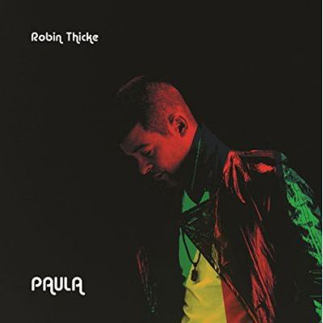

1
Danzig — Danzig Sings Elvis (#65)
released on 17th April 2020
+
2

Lil Xan — Total Xanarchy (#9)
released on 6th April 2018
+
3
Linkin Park — One More Light (#29)
released on 19th May 2017
+
4

Bush — Black and White Rainbows (#55)
released on 10th March 2017
+
5

Corey Feldman — Angelic 2 the Core (#12)
released on 22nd June 2016
+
6

U2 — Songs of Innocence (#45)
released on 9th September 2014
+
7

Robin Thicke — Paula (#8)
released on 10th March 2014
+
8
The Twang — Neon Twang (#68)
released on 10th March 2014
+
9
Black Flag — What The... (#44)
released on 5th November 2013
+
10

Blood on the Dance Floor — Bad Blood (#7)
released on 3rd September 2013
+